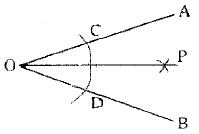
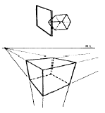
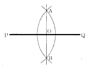

제품응용모델링기능사 (2004-07-18 기출문제)
1과목: 제품디자인일반
1. 서로 다른 색상의 영향으로 색상의 차가 크게 보이는 현상은?
- 색상대비
- 한난대비
- 면적대비
- 동시대비
(정답률: 알수없음)

2. 색의 배색을 하기 전에 고려해야 할 사항이 아닌 것은?
- 통일과 변화
- 가격과 시간
- 실공간과 허공간
- 균형과 불균형
(정답률: 알수없음)
3. 아이디어 발상 방법 중 브레인스토밍(Brain Storming)법의 집단토의 원칙 중 틀린 것은?
- 아이디어의 좋고, 나쁨에 대한 비판을 금지한다.
- 자유로운 발언을 추구한다.
- 많은 수의 아이디어를 내도록 한다.
- 상대방의 아이디어에 대해 반대의견을 제시한다.
(정답률: 알수없음)
4. 급속한 시장 수용단계로 지속적으로 이익이 향상되어지는 제품수명 주기는?
- 도입기
- 성장기
- 성숙기
- 쇠퇴기
(정답률: 알수없음)
5. 다음 중 비주얼 디자인의 설명으로 적합한 것은?
- 생활에 필요한 것을 개발하고 사용하기 위한 디자인이다.
- 정보의 디자인이며, 전달을 목적으로 한 디자인이다.
- 인간의 거주와 주변환경을 위한 디자인이다.
- 물품의 판매 및 보관과 운송을 위한 디자인이다.
(정답률: 알수없음)
6. 제품의 발상기법 중 문제에 관련된 항목을 나열하고 그 항목별로 문제의 특정 변수에 대해 검토하여 아이디어를 구상하는 방법은?
- 체크리스트법
- 입출력법
- 시넥틱스
- 브레인스토밍
(정답률: 알수없음)
7. 다음 중에서 가장 밝은 빛을 필요로 하는 장소는?
- 부엌
- 계단
- 거실
- 작업실
(정답률: 알수없음)
8. 주로 인물을 소재로 익살, 유머, 풍자 등의 효과를 살린 그림은?
- 카툰
- 캐릭터
- 캐리커쳐
- 초상화
(정답률: 알수없음)
9. 낮에 빨간 물체가 야간에는 검게 보이고, 낮에 파랗게 보이던 물체가 야간에는 밝은 회색으로 보이는 현상은?
- 자극현상
- 망막측현상
- 푸르킨예 현상
- 스펙트럼 현상
(정답률: 알수없음)
10. 데깔꼬마니(decalcomanie)에서 볼 수 있는 대칭의 종류는?
- 방사대칭
- 선대칭
- 이동대칭
- 확대대칭
(정답률: 알수없음)
11. 게슈탈트 심리 법칙 중에서 진행방향이나 배열이 같은 것 끼리 무리지어 보이는 현상은?
- 폐쇄성의 원리
- 유사성의 원리
- 근접성의 원리
- 연속성의 원리
(정답률: 알수없음)
12. 다음중 굿(Good) 디자인의 조건이라 할 수 없는 것은?
- 경제성
- 심미성
- 합목적성
- 독립성
(정답률: 알수없음)
13. 다음중 형(shape)이 주는 인상으로 잘못 연결된 것은?
- 기하직선형 - 안정, 신뢰, 확실
- 자유직선형 - 강렬, 예민, 직접적, 대담
- 기하곡선형 - 명료, 자유, 이해, 확실
- 자유곡선형 - 우아, 질서, 불명료, 활발, 명쾌
(정답률: 알수없음)
14. 다음 작업장의 디자인시 고려해야 할 사항으로 틀린 것은?
- 정밀한 디자인을 위한 작업대는 3~4° 정도의 각도가 적당하다.
- 정밀한 디자인이나 설계를 하기위한 작업대는 각도 조절이 용이한 것이 좋다.
- 힘이 드는 작동 스위치 등은 몸 위치를 유지하면서 방해받지 않는 위치에 설비한다.
- 서서 일하는 경우 바닥을 딱딱하게 설계한다.
(정답률: 알수없음)
15. 어떤 도형이나 색채를 잘못 보아서 생기는 시각의 착오는 어떤 현상 때문에 주로 발생하는가?
- 착시현상
- 공동현상
- 군집현상
- 유사현상
(정답률: 알수없음)
2과목: 제도와 CAD
16. 질감(Texture)을 선택할 때 고려해야 할 점이 아닌 것은?
- 빛의 반사 또는 흡수
- 감촉
- 스케일
- 색조
(정답률: 알수없음)
17. 다음 중 감법혼색의 특징이 틀린 것은?
- 혼합할수록 점점 탁하고 어두워진다.
- 감법혼합의 2차색은 가산혼합의 3원색이 된다.
- 감법혼색의 3원색은 R, G, B 이다.
- 3원색을 모두 혼합하면 검정에 가까운 회색이 된다.
(정답률: 알수없음)
18. 다음 중 디자인의 분야가 다른 하나는?
- 운송기기디자인
- 기업이미지디자인
- 포장디자인
- 광고디자인
(정답률: 알수없음)
19. Red와 Green의 혼색은 Yellow, Green과 Blue의 혼색은 Cyan, Red와 Blue의 혼색은 Magenta, 그리고 3색을 동시에 혼합하면 백색광이 되는 혼색은?
- 가법혼색
- 감법혼색
- 중간혼색
- 평균혼색
(정답률: 알수없음)
20. 색 지각 및 감정에 관한 설명으로 틀린 것은?
- 색을 느끼는 것은 물체 표면에서 반사되는 빛이 눈을 통해 들어오기 때문이다.
- 색이 물체 표면에서 반사하는 빛에 의하여 느껴지는 것을 표면색 이라고 한다.
- 사과의 색이 빨갛게 지각되는 것은 빨간색만을 흡수하고 나머지는 반사하기 때문이다.
- 색은 사람의 마음에 깊은 감동과 정감을 주고, 우리들의 생활을 보다 풍요롭게 만든다.
(정답률: 알수없음)
21. 도면의 길이와 실물의 길이가 비례하지 않을 때 비례척이 아님을 표시한 것으로 맞는 것은?
- 실척
- 축척
- 배척
- NS
(정답률: 알수없음)
22. 투시도의 선들은 원근감에 따라 하나의 점으로 모이게 된다. 우리는 이 점을 무엇이라고 하는가?
- 소점
- 분점
- 시점
- 기점
(정답률: 알수없음)
23. 전산응용설계와 전산응용가공을 바르게 표현한 것은?
- CAD/Drawing
- CAD/CAM
- CAD/Graphic
- RGB/CMYK
(정답률: 알수없음)
24. 다음 그림과 같이 각을 2등분 할 때 가장 먼저 그려야 할 것은?

- 곡선 CD
- 곡선 CP
- 곡선 DP
- 선분 OP
(정답률: 알수없음)
25. 다음 Auto CAD에서 기능키의 설명이 틀린 것은?
- F9 - 스냅을 실행시킨다.
- F7 - 그리드를 보이거나, 안보이게 할 수 있다.
- F8 - Ortho를 On/Off로 조정하는 기능키이다.
- F2 - 도움말을 제공하는 기능키이다.
(정답률: 알수없음)
26. 다음은 협소한 곳의 치수 기입에 대한 설명이다. 틀린 것은?
- 치수 보조선의 간격이 협소하여 치수 숫자를 기입할 여백이 적을 때는 지시선을 이용하여 기입한다.
- 치수선 아래쪽에 기입한다.
- 치수 보조선을 생략하고 치수만 기입한다.
- 별도의 상세도를 그려 그 곳에 기입한다
(정답률: 알수없음)
27. 다음 제3각법에 대한 설명 중 틀린 것은?
- 정면도의 표현이 합리적이다.
- 치수 기입이 합리적이다.
- 보조 투상이 용이하다.
- 물체를 제1상한에 놓고 투상한다.
(정답률: 알수없음)
28. 컴퓨터 그래픽스의 정의에 관한 설명 중 잘못된 것은?
- 넓은 의미로는 컴퓨터를 이용한 설계, 인간과 컴퓨터와의 인터페이스, 컴퓨터 회화까지 포함한다.
- 컴퓨터의 하드웨어와 소프트웨어를 이용하여 도형이 나 그림, 화상 등을 만들어 아이디어를 얻어내는 작업이다.
- 2D, 3D 애니메이션 등의 의미를 모두 포함한다.
- 좁은 의미로는 문자와 숫자, 이미지, 영상 등을 표현하여 정보를 전달하는 것을 말한다.
(정답률: 알수없음)
29. 다음 그림은 어떤 투시도를 설명하기 위한 것인가?

- 평행 투시
- 유각 투시
- 사각 투시
- 측면 투시
(정답률: 알수없음)
30. 다음 그림의 작도법에 관한 설명으로 맞는 것은?

- 직선의 2등분
- 원호의 3등분
- 직선의 4등분
- 각의 2등분
(정답률: 알수없음)
3과목: 모델링재료
31. 다음 중 무기재료에 속하는 것은?
- 목재
- 유리
- 플라스틱
- 종이
(정답률: 알수없음)
32. 다음 중 플라스틱의 장점으로 틀린 것은?
- 전기 전도율이 우수하다.
- 자유로운 형태의 성형이 가능하다.
- 내수성이 좋다.
- 착색이 용이하고 다양한 재질감을 낼 수 있다.
(정답률: 알수없음)
33. 다음 중 재사용이 가능한 플라스틱은?
- 아크릴 수지
- 페놀 수지
- 멜라민 수지
- 폴리우레탄
(정답률: 알수없음)
34. 고체와의 접착력이 우수하여 금속, 유리, 도자기, 플라스틱 등 여러 분야에 사용되는 접착제는?
- 에폭시 수지 접착제
- 멜라민 수지 접착제
- 알부민 접착제
- 카제인
(정답률: 알수없음)
35. 나무의 성장시 형성되는 나이테 중 세포 층이 넓고 유연한 성질을 가지는 것은?
- 심재
- 수심
- 춘재
- 추재
(정답률: 알수없음)
36. 도료의 기능으로 맞지 않는 것은?
- 표면보호
- 전기 전도성 조절
- 부패방지
- 점도조절
(정답률: 알수없음)
37. 다음 재료와 연결된 내용이 잘못된 것은?
- 카본블랙 - 무기안료
- 산화철 흑 - 무기안료
- 코발트 청 - 유기안료
- 리틀레드 - 유기안료
(정답률: 알수없음)
38. 재료의 빛에 대한 성질과 관련이 있는 내용은?
- 열관류, 열전도
- 투과율, 반사율
- 함수율, 비열
- 흡음율, 차음도
(정답률: 알수없음)
39. 파티클 보드의 특성을 잘 설명한 것은?
- 휨 가공이 안된다.
- 섬유 방향에 따른 강도차가 없다.
- 방음, 단열 효과가 없다.
- 표면이 매끄러워 경도가 낮다.
(정답률: 알수없음)
40. 플라스틱의 여러 물성 중 금속과 비교할 때 가장 취약한 것은?
- 내열성
- 탄성
- 전기 절연성
- 내수성
(정답률: 알수없음)
41. 유리섬유보강플라스틱(FRP)을 재료로 하는 제품디자인 모델링의 장점이라고 볼 수 없는 것은?
- 곡선형 모델 제작의 용이성
- 모델의 견고성과 내구성
- 모델 제작의 신속성
- 광택성
(정답률: 알수없음)
42. 다음은 소석고에 대한 설명이다. 틀린 것은?
- 물에 의해 경화되며 건조시간이 느리다.
- 경도와 백색도가 뛰어날수록 고급제품에 속한다.
- 정밀 조작용에 사용되는 석고는 더운물을 사용하면 찬물보다 빨리 굳는다.
- 굳는 시간을 연장하고자 할 때 식초를 약간 섞어서 사용하면 효과적이다.
(정답률: 알수없음)
43. 다음 중 동물성 접착제는?
- 아교
- 콩풀
- 녹말풀
- 옻풀
(정답률: 알수없음)
44. 다음 안료에 대한 설명 중 틀린 것은?
- 전색제를 착색하는 것으로 물이나 기름에 녹지 않는 분말이다.
- 안료는 성분에 따라 무기안료와 유기안료로 나눈다.
- 무기안료에는 체질안료도 포함된다.
- 무기안료를 레이크(lake)안료라고도 부른다.
(정답률: 알수없음)
45. 석고 원석을 500∼1300℃로 소성하여 황산염, 규산, 점토같은 불순물을 첨가 소성한 후 여기에 물 반죽한 것을 무엇이라고 하는가?
- 소석고 플라스터
- 경석고 플라스터
- 돌로마이트 플라스터
- 마스네시아
(정답률: 알수없음)
4과목: 제품응용모델링
46. 다음 중 디자인이 결정된 후 기술 부분 등의 제작자 측면에서 만들어지는 모델로서 제품원형이라고 불리워지는 것은?
- 프로토타이프 모델(prototype model)
- 이미지 모델(image model)
- 러프목업 모델(rough mock-up model)
- 프리젠테이션 모델(presentation model)
(정답률: 알수없음)
47. 다음 중 NC 공작기계가 아닌 것은?
- NC 선반
- NC 밀링 머신
- NC 연삭기
- NC 스크레이퍼
(정답률: 알수없음)
48. 비교적 큰 공작물의 평면을 절삭 가공하는 기계는?
- 전조기
- 보링 머신
- 조각기
- 세이퍼
(정답률: 알수없음)
49. 스프레이 건의 사용에서 도료의 단절 원인이 아닌 것은?
- 도료 컵이 극단적으로 경사되어 있다.
- 도료 통로가 막혀 있다.
- 노즐의 죄임이 불량이다.
- 도료점도가 낮다.
(정답률: 알수없음)
50. 모양이 복잡하거나 소형인 부품에 이용하는 도장법으로서, 도막이 일정하지 않은 도장방법은?
- 칠솔도장
- 롤러도장
- 분무도장
- 침지도장
(정답률: 알수없음)
51. 도구막대에서 치수기입에 관련된 명령어는?
- dimension
- inquirt
- draw
- insert
(정답률: 알수없음)
52. 솔리드 모델링에서 Union 의 의미는?
- 합집합
- 차집힙
- 교집합
- 집합
(정답률: 알수없음)
53. 열가소성 수지의 사용으로 두께가 얇은 샴푸병, 음료수병 제작에 많이 사용되는 성형방법은?
- 사출성형
- 압출성형
- 취입성형
- 진공성형
(정답률: 알수없음)
54. 모델링 재료로서 클레이의 주성분 구성이 옳은 것은?
- 왁스 9∼10%, 유황 20∼25%, 회분 9∼10%, 유지분 50∼55%
- 왁스 9∼10%, 유황 10∼20%, 회분 10∼20%, 유지분 50∼55%
- 왁스 10∼20%, 유황 20∼25%, 회분 9∼10%, 유지분 40∼45%
- 왁스 9∼10%, 유황 50∼55%, 회분 9∼10%, 유지분 20∼25%
(정답률: 알수없음)
55. 다음 퍼티의 종류 중에 경화제를 사용하면 빠르게 굳고 단단하여 두꺼운 도장이 가능한 것은?
- 오일 퍼티
- 캐슈 퍼티
- 래커 퍼티
- 폴리에스텔 퍼티
(정답률: 알수없음)
56. CAD에서 시각적 보조수단으로 끝점, 중간점, 원의 중심, 원의 사분점, 교차점등을 찾기 위해 사용하는 명령 기능은?
- GRID
- SNAP
- OSNAP
- LIMITS
(정답률: 알수없음)
57. 피가공재의 표면을 미세한 연삭 입자의 연삭으로 가공물 표면을 매끈하게 광택을 내는 가공법은?
- 널링(knuring)
- 샌딩(sanding)
- 그라인딩(grinding)
- 버핑(buffing)
(정답률: 알수없음)
58. 다음은 모델링 가공에 쓰일 수 있는 기계들이다. 이 중 성격이 다른 것은?
- NC(수치제어:numerical control) 선반
- 머시닝 센터(machining center)
- CNC(computerized numerical control) 밀링 머신
- 플라이어(plier)
(정답률: 알수없음)
59. 고형 발포성 수지의 가공에 적합하지 않은 도구는?
- 끌
- 열선
- 톱
- 사포
(정답률: 50%)
60. 컨베이어(Conveyor)에 의한 연속도장이나 동일한 도료에 의한 도장작업에 적합한 도장방식은?
- 압송식
- 흡상식
- 난사식
- 중력식
(정답률: 40%)